Pythonを学校のPCでも使えるようにする
学校のPCは管理者権限がないため、Pythonのインストーラーを使ってインストールすることが難しいです。今回はPythonのパッケージを使ってpythonを実行使用と思います。
1.VSCodeをインストールする
上のリンクからダウンロードサイトへ飛びます。
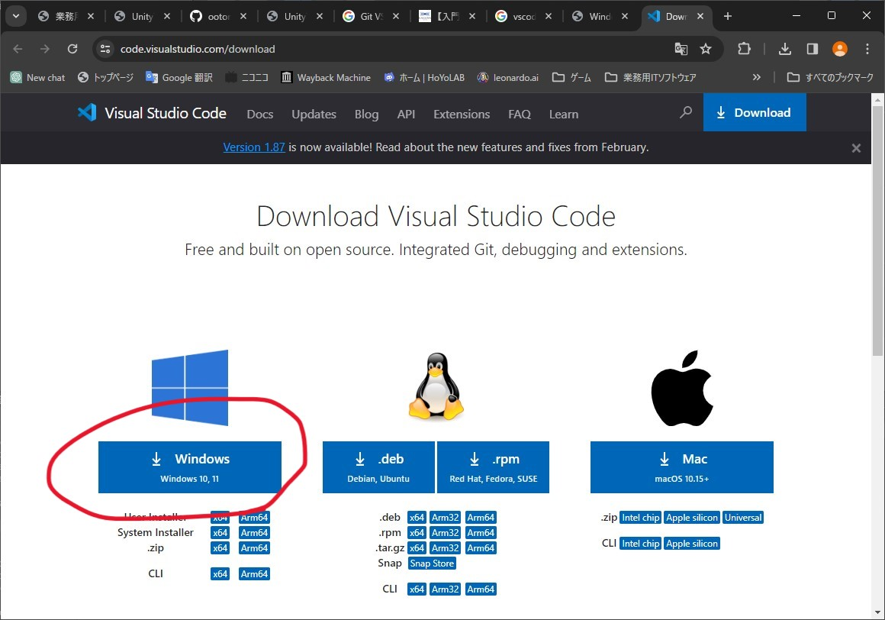相変わらずインストーラーがダウンロードフォルダにあるので開きます。このインストーラーはちゃんと日本語です。VSCodeをすでにセットアップ済みのため文章で簡単に説明
利用許諾は同意するを選択し、次へをクリック
インストール先はデフォルトのままで構いません。
スタートメニューフォルダもそのまま次へ
デスクトップにアイコンを作成するにチェックを入れて次へ
インストールを押して終わり次第完了
2.VSCodeを日本語にする
VSCodeを日本語化します。筆者の画面はもうすでに日本語になっていますが、やり方だけ紹介します。
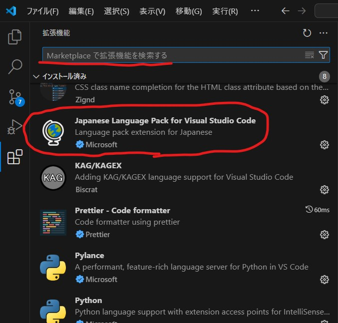左側のタイルマークをクリックして拡張機能の画面を開きます。
その画面の検索ボックスにJapanと入力し、赤丸でかこった言語パックを探してください。

インストールが終わるとVSCodeの右下にこの通知が来ます。青いボタンを押して、言語パックを適用させましょう
3.Pythonのパッケージをダウンロードする
上のリンクからダウンロードサイトに飛びます。
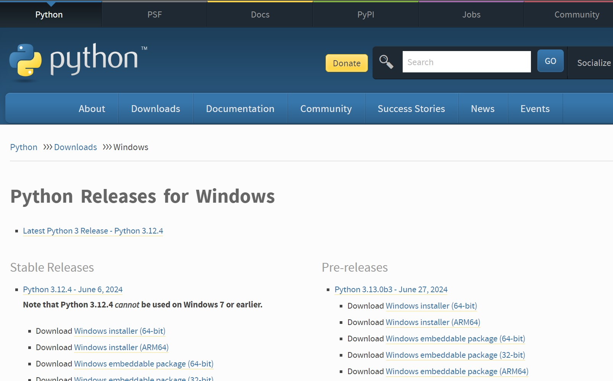アクセスするとこのような画面が出てくると思います。
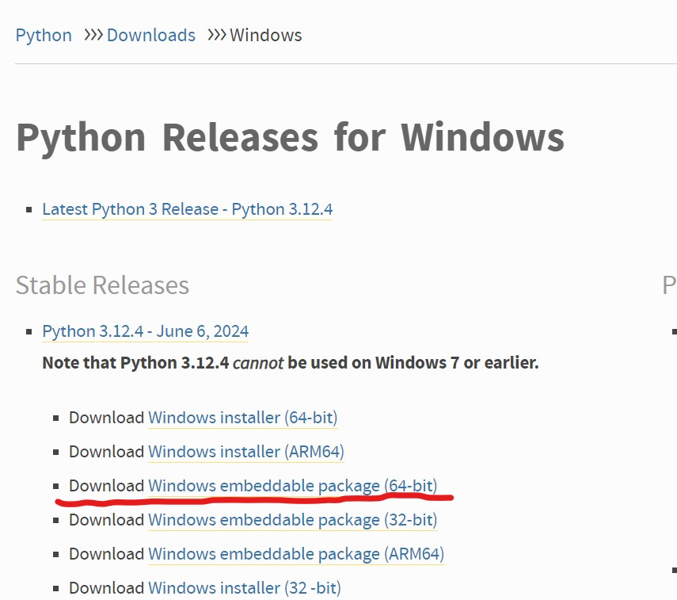Stable ReleasesからPython 3.12.4 - June 6, 2024というバージョンを探します。Download Windows embeddable package (64-bit)というパッケージをダウンロードします。黄色い下線が入っている部分をクリックするとダウンロードが始まります。
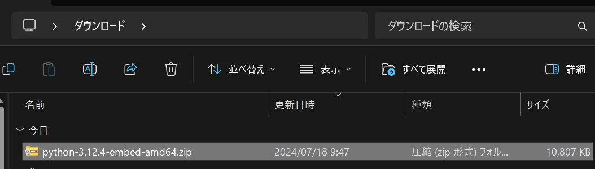そうすればダウンロードフォルダにこのようにダウンロードしてきたパッケージが入っていると思います
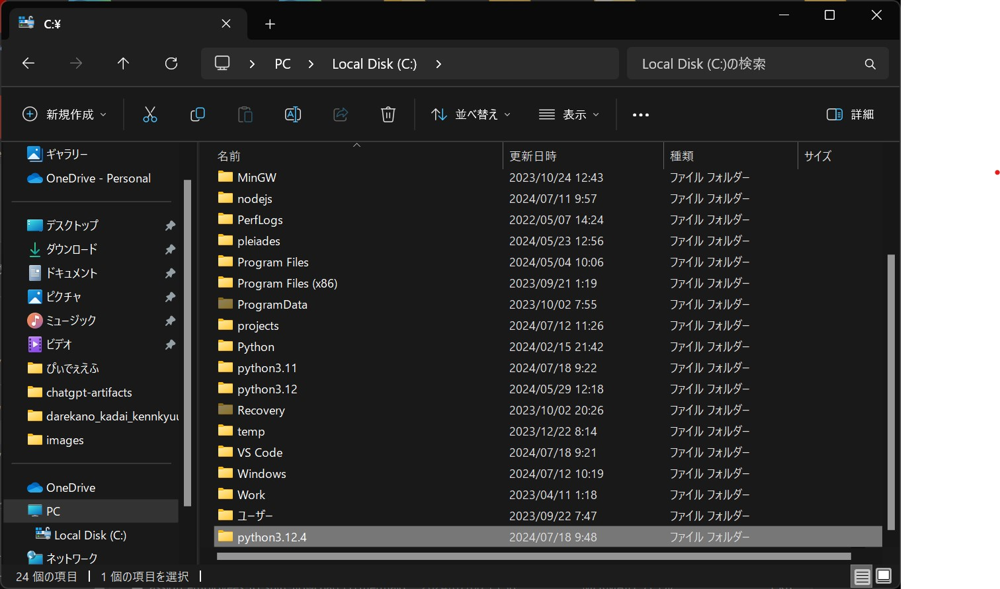エクスプローラーのPCからLocal Disk(C:)を開いてこの中にPython3.12.4という名前のフォルダを作成します。
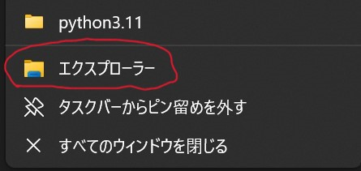タスクバーにあるエクスプローラを右クリックして、そこに出てくるエクスプローラと書かれた、赤丸でかこったところをクリックすると新しいエクスプローラが開きます。次の手順に進んでください
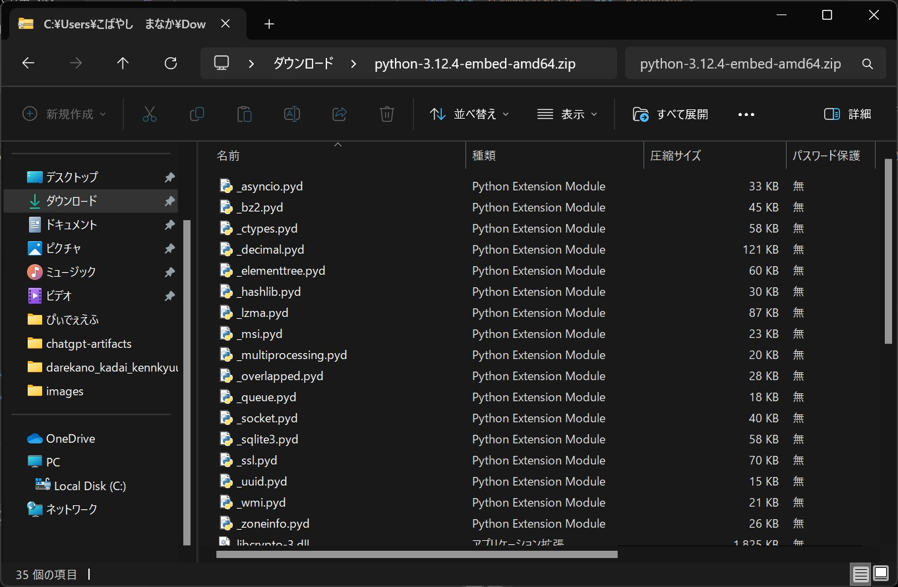新しく開いたエクスプローラで、先ほどダウンロードしたPythonのパッケージのzipファイルをダブルクリックして開き、Ctrl+Aで全選択してください。
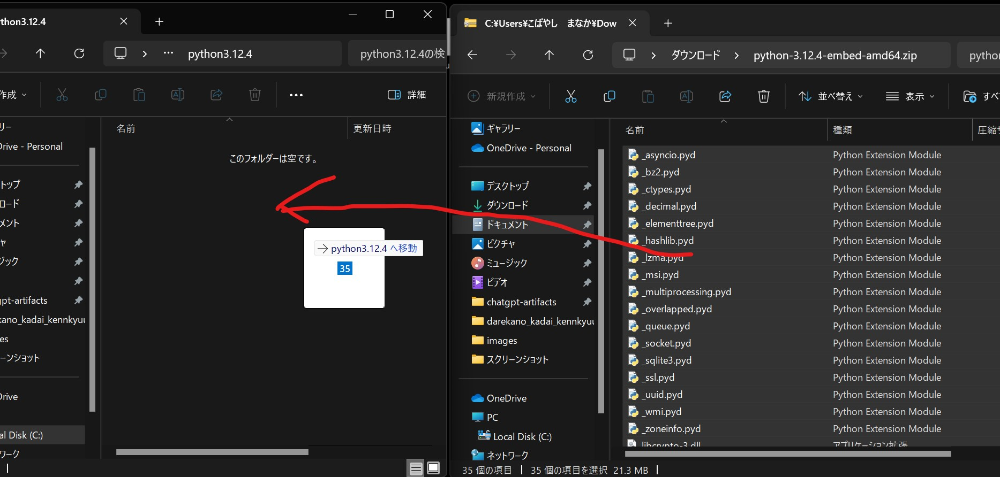全選択したファイルを左クリックで握って、Python3.12.4フォルダにドラックアンドドロップしてください。全てコピーされているのを確認したらVSCodeを開いてください。
4.VSCodeにPythonを認識させる
まず下準備として適当なところにフォルダとPythonのファイルを作成してください。
作成したPythonのファイルの中に適当にprint文でも入れておいてください。
print("こんにちは世界")
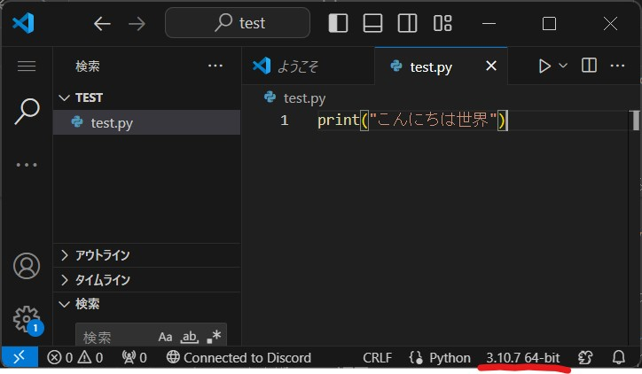
そうすればここに本来であればインタプリターの選択が出てくるはずなのでここを押します。
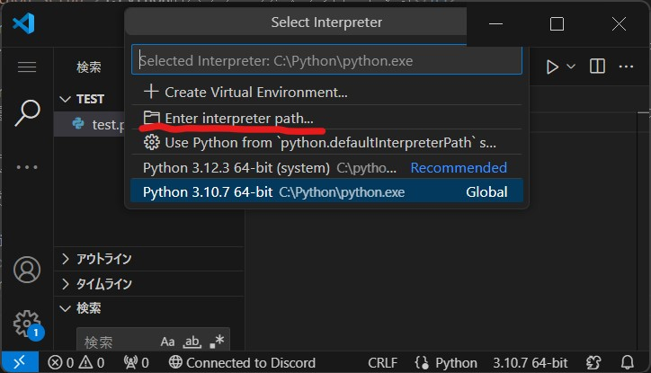出てくるメニューのEnter interpreter path…を選択してください。
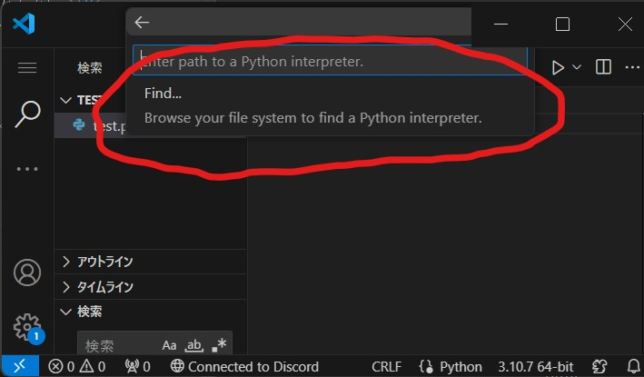そのままFindを選択します。
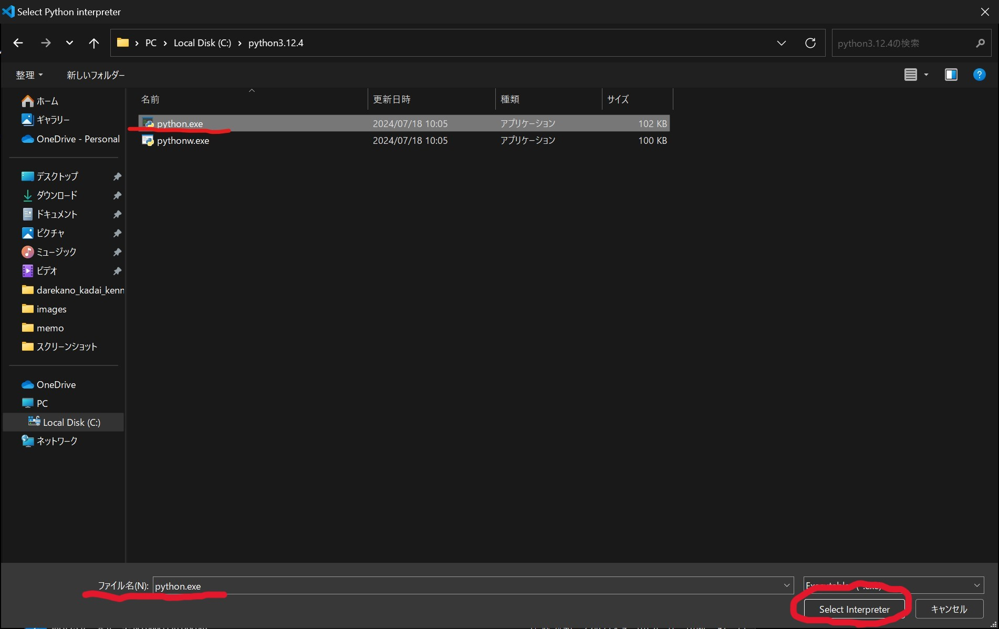CドライブのPython3.12.4フォルダ内のPython.exeを選択し、ファイル名にPython.exeが入っていることを確認して、右下にあるSelect interpreterを選んでください
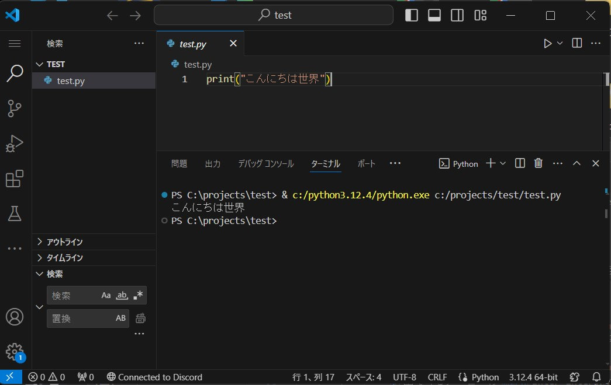そうすればこのように実行できるはずです。
5.注意点
実行するPythonのファイルのパスに日本語名が入っていると動作しません。つまり、デスクトップにフォルダ作成してそこで実行させようとすると、マイクロソフトのアカウント名に日本語が含まれるため実行できません。Cドライブ直下にProjectファイルを作成し、デスクトップにショートカットを作成しておくと便利だと思います。